Table of Contents
This document provides the instructions for installing the Firebird ODBC driver installed. Currently (24-Apr-07) the ODBC driver is required by the LoadXML utility.
You need to download and install the following software packages. The links and versions are as of the 24-Apr-07 (Beta V2.00.00.00142). These download links are from the following web page http://www.firebirdsql.org/index.php?op=files&id=odbc
- Windows Full Install
Microsoft Data Access Components (MDAC) 2.8 Software Development Kit mdac28sdk.msi (to obtain the ODBC Test utility)
EasySoft Linux Driver Version 1.0 from Freshmeat (kernel 2.4, glibc 2.3, libstdc++ 5.0)
![[Note]](../images/admon/note.gif)
Note See the "Licensing Easysoft products under Unix" page as even though it's a Freshmeat project it may not be open source.
Configuration information: http://www.easysoft.com/products/data_access/odbc_firebird_driver/manual/configuration.html
General EasySoft FTP download site: ftp://ftp.easysoft.com/pub/firebird/
The JRE is available as part of the JDK installer but by downloading it separately and installing the JRE first you obtain better control over it's install path location.
Launch the
Firebird_ODBC_2.0.0-Win32.exeinstaller and click on "Next >"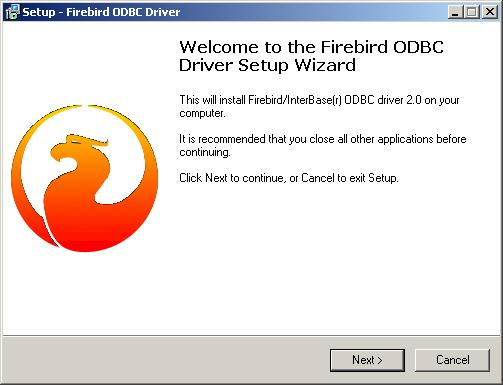Read the license, click "I accept the agreement" and then click "Next >".
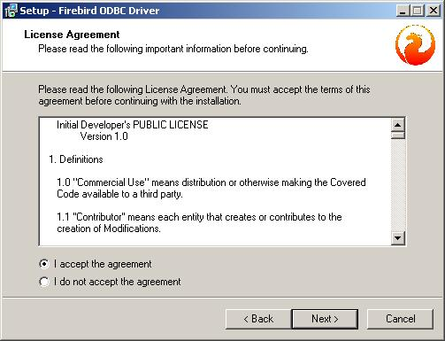Click "Next >".
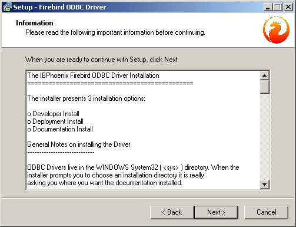Change the path to "C:\Firebird\Firebird_ODBC" and click "Next >".
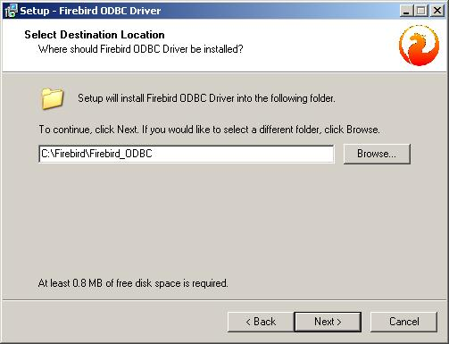Select "Developer install - register driver in System Dir. Install documentation to program group." and click "Next >".
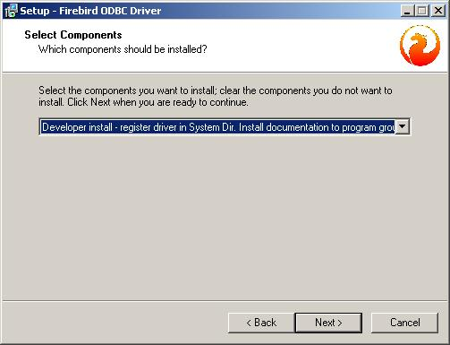Set the "Start Menu Folder" to "Firebird\Firebird ODBC Driver" and click "Next >".
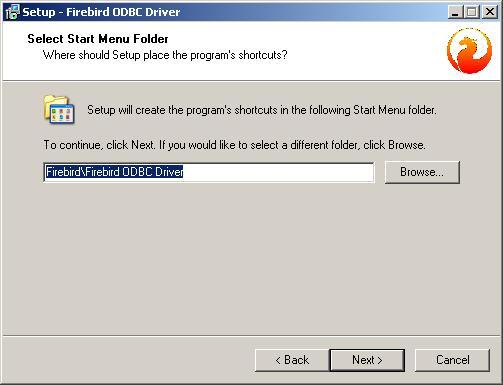Click "Install".
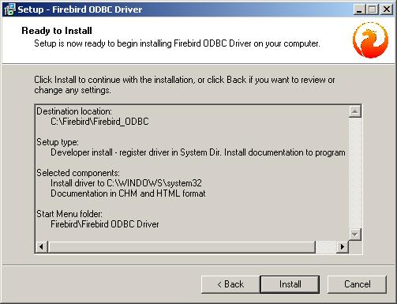Click "Next >".
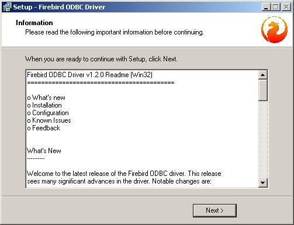Click on "Finish".
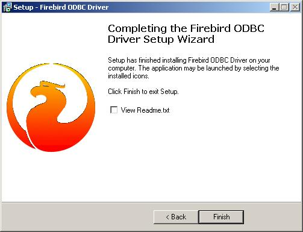
Open the "Data Sources (ODBC)" control panel inside the "Administrative Tools" control panel/folder.
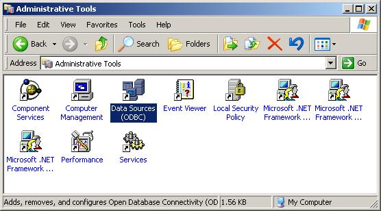Select the "System DSN" tab (this assumes you're logged into your system with administrator privileges) and select "Add...".
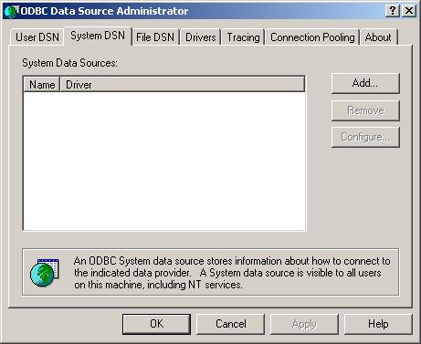Select the "Firebird/InterBase(r) driver" and click on "Finish".
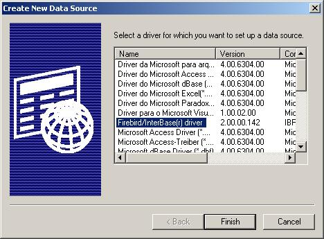Set the following properties and then click "Test Connection":
Data Source Name (DSN): FW
Note This name may have to be revised to match what LoadXML expects.
Driver: IscDbc
Description: Fieldworks
Database: C:\Firebird\data\fieldworks\FW01.FDB
Client: <empty>
Database Account: SYSDBA
Password: inscrutable
Role: <empty>
Character Set: NONE
Dialect: 3
Safe thread: checked
Transaction: all unchecked
Quoted Identifiers: checked
Set null field SCHEMA
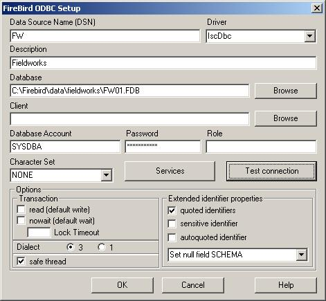If everything is setup correctly you should get the following window and then click "Ok" to this window, the "FireBird ODBC Setup" window and the "ODBC Data Source Administrator" window.
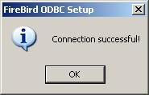
Launch mdac28sdk.msi and click "Next >"
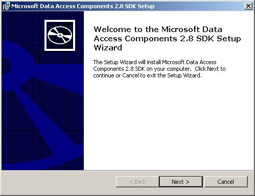Read the license, click "I accept the agreement" and then click "Next >".
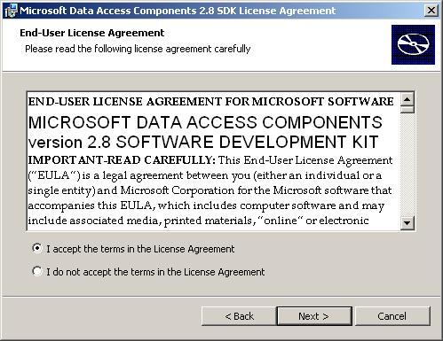Fill in the username and organization and click "Next >".
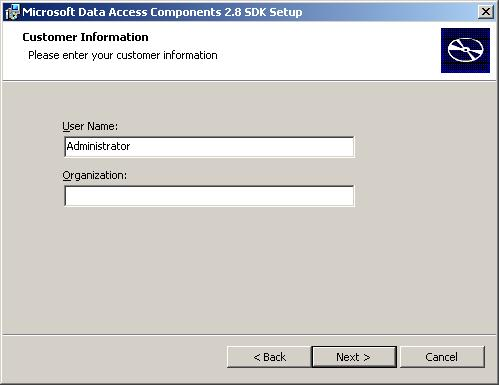Click "Install Default"

Click "Install"
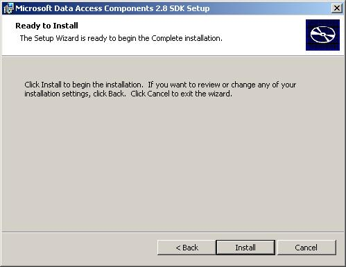Click "Finish"
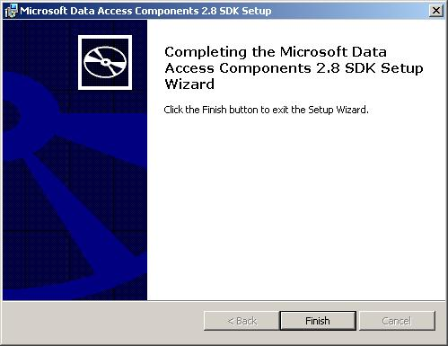
Start the appropriate ODBCTest utility from Windows Explorer Start menu under "Microsoft Data Acess 2.8 SDK".
Note For most users this will be "ODBCTest (Unicode, x86)".
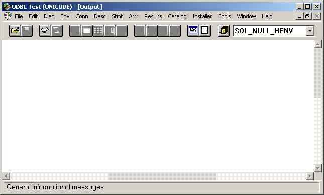Either use the "Full Connect ..." under the "Conn" menu, CTRL-F or click on the "Handshake" icon then the following "Full Connect" window will appear. Select "FW"and then click "OK".
Note You don't specify a "User ID" or "Password".
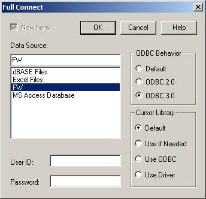The following result should then appear.
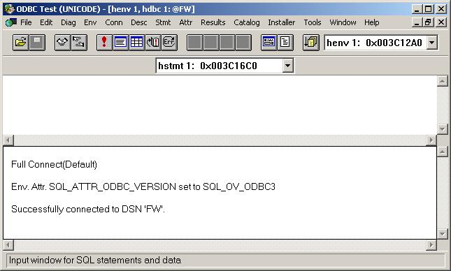Type "SELECT * FROM RDB$DATABASE;" in the top half of the window, click on the "Exclamation Point" icon, CTRL-E or select "SQLExecDirect..." item from the "Stmt" menu. The result in the following bottom window pane should appear "SQL_SUCCESS=0".
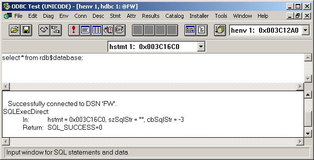Click on the "Window" icon beside the "Exclamation Point" icon, CTRL-R or select "Get Data All" item from the "Results" menu. The result in the following window pane should appear as:
"RDB$DESCRIPTION", "RDB$RELATION_ID", "RDB$SECURITY_CLASS", "RDB$CHARACTER_SET_NAME" <Null>, 310, <Null>, "NONE " 1 row fetched from 4 columns.
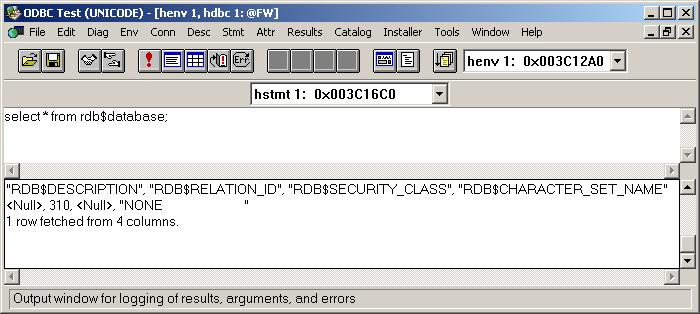You can now exit the program by closing the window.